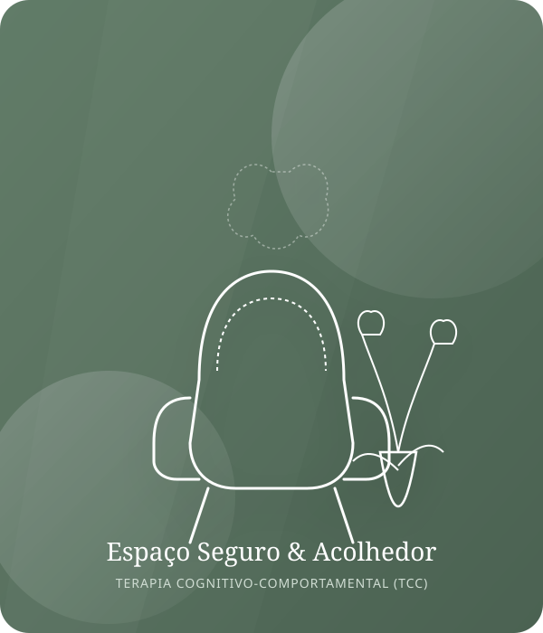
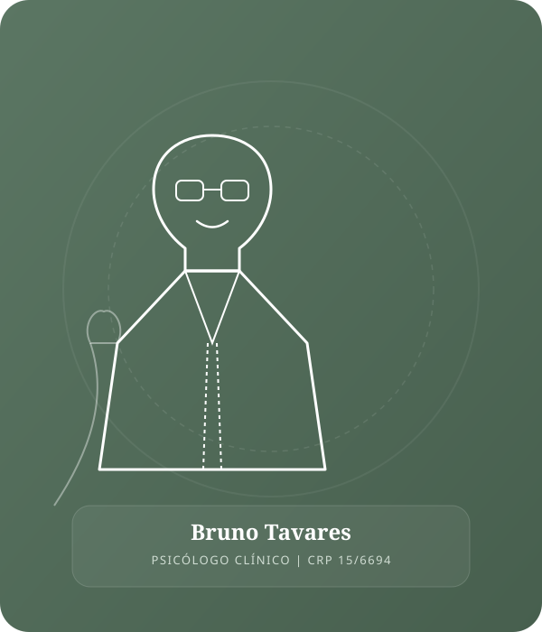

Atendimento psicológico especializado fundamentado na Terapia Cognitivo-Comportamental (TCC). Estratégias práticas e científicas para superar a ansiedade, o estresse e retomar a leveza no seu dia a dia.

Abordagem focada em resultados práticos e transformações reais para as suas principais demandas emocionais e comportamentais.
Desaceleração do fluxo constante de pensamentos acelerados, manejo prático de crises de pânico e recuperação da serenidade e segurança nas tarefas diárias.
Saber como a TCC trata issoIdentificação detalhada dos gatilhos de exaustão mental, estabelecimento de limites saudáveis na rotina profissional e estratégias de descompressão diária.
Saber como a TCC trata issoReestruturação gradativa de crenças limitantes e pensamentos desqualificadores, resgatando a energia, a motivação e o significado pessoal em cada área da vida.
Saber como a TCC trata issoDesenvolvimento de estratégias de regulação diante do estresse, prevenindo comportamentos compulsivos (alimentação, compras, telas) e fortalecendo o autocontrole.
Saber como a TCC trata issoSuperação da autocrítica destrutiva, ressignificação da síndrome do impostor e construção de uma autoimagem sólida, resiliente e fundamentada em valores pessoais.
Saber como a TCC trata issoAprimoramento do diálogo e da inteligência interpessoal, aprendendo a dizer não sem culpa, definir limites claros e manter relacionamentos equilibrados e saudáveis.
Saber como a TCC trata issoA TCC (Terapia Cognitivo-Comportamental) é uma das abordagens mais recomendadas e estudadas no mundo todo. Ela fundamenta-se na premissa de que a forma como interpretamos as situações ao nosso redor determina como nos sentimos e como nos comportamos.
Como você interpreta a realidade e a mensagem automática que sua mente produz sobre os fatos.
As reações corporais e sentimentos desencadeados (ansiedade, tristeza, medo, calma ou alívio).
As escolhas e atitudes tomadas como resposta a essa combinação de pensamento e sentimento.
Trabalha os problemas atuais com objetivos estruturados e metas claras acordadas entre paciente e terapeuta.
Você aprende técnicas comprovadas que funcionam como uma caixa de ferramentas pessoal para crises e desafios futuros.
As sessões são dinâmicas: você compreende exatamente o motivo de cada etapa e exercício praticado.
Alta taxa de resposta clínica e eficácia atestada pela Organização Mundial da Saúde para transtornos emocionais.

Acredito profundamente que a psicoterapia não é apenas sobre tratar sintomas, mas sobre criar um espaço genuíno de escuta acolhedora onde você se sinta seguro para ser inteiramente quem é, sem medos ou julgamentos.
Como psicólogo clínico (CRP 15/6694) especializado em Terapia Cognitivo-Comportamental, dedico minha prática a ajudar pessoas a compreenderem o funcionamento da própria mente, superarem ciclos de ansiedade e construírem uma relação mais saudável consigo mesmas.
Cada sessão é conduzida com rigor ético, empatia e compromisso com o seu bem-estar, respeitando a sua singularidade e o seu tempo de desenvolvimento.
Relatos de pacientes que reencontraram a serenidade e a clareza através do acompanhamento terapêutico.
"Cheguei ao consultório do Bruno no auge de crises intensas de ansiedade que afetavam meu trabalho. A abordagem de TCC dele me deu ferramentas práticas que uso todos os dias. Hoje me sinto no controle da minha vida novamente."
"O acolhimento e o profissionalismo do Bruno fizeram toda a diferença. Ele me ajudou a sair de um estado profundo de exaustão e Burnout. Um psicólogo extremamente empático e ético."
"Fazer terapia com a TCC mudou minha forma de enxergar meus próprios pensamentos. Aprendi a identificar a autocrítica e ganhei uma autoconfiança que nunca tinha tido antes. Recomendo de olhos fechados!"
Respostas transparentes para ajudar você a dar o primeiro passo com segurança.
A primeira sessão é um momento de acolhimento e escuta. Espaço para você compartilhar o que o trouxe à terapia, suas principais angústias e objetivos. Eu explicarei como a TCC funciona e traçaremos juntos um plano inicial, sem pressões.
Sim! As sessões online ocorrem via videochamada em plataformas seguras e criptografadas, aprovadas pelo Conselho Federal de Psicologia (CFP). Têm exatamente a mesma eficácia da terapia presencial, permitindo que você realize o atendimento no conforto e privacidade do seu lar.
As sessões têm duração aproximada de 50 minutos e ocorrem semanalmente, o que garante a continuidade necessária para o progresso terapêutico. Conforme os avanços e alta gradativa, a frequência pode ser espaçada.
Sim! O atendimento é particular, porém eu forneço recibos oficiais e Nota Fiscal com número do registro profissional (CRP 15/6694) para que você solicite o reembolso junto ao seu plano de saúde de acordo com o seu convênio.
A TCC é uma abordagem objetiva, estruturada e focada no presente. Em vez de apenas falar sobre o passado, nós identificamos como seus pensamentos atuais influenciam suas emoções e comportamentos, fornecendo exercícios e estratégias práticas para o seu dia a dia.